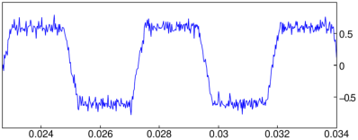

21.3.3 Moving-average filter
The moving_average
command applies a moving-average filter to a signal.
-
moving_average takes two arguments:
-
A, an array of numeric values representing a sampled signal.
- n, a positive integer.
- moving_average(A,n) returns an array B obtained
by applying a moving-average filter of length n to A.
The elements of B are defined by
for i=0,1,…,L−n,
where L is the length of A.
Moving-average filtering is fast and useful for smoothing time-encoded signals.
Example
| snd:=soundsec(2):;
noise:=randvector(length(snd),normald,0,0.05):;
data:=0.5*threshold(3*sin(2*pi*220*snd),[-1.0,1.0])+noise:;
noise_clip:=createwav(data); |
|
| |
a sound clip with 88200 samples at 44100 Hz (16 bit, mono)
| | | | | | | | | | |
|
| plotwav(noise_clip,range=[1000,1500]) |

| filtered_clip:=createwav(moving_average(data,25));
plotwav(filtered_clip,range=[1000,1500]) |
You could also listen to the two waveforms by using playsnd
with noise_clip and filtered_clip
(see Section 28.2.14).